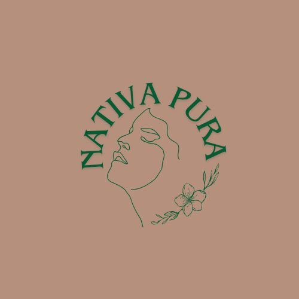
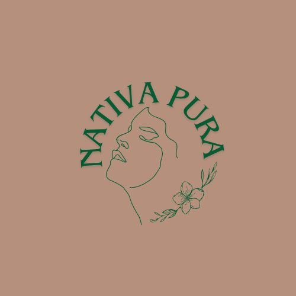
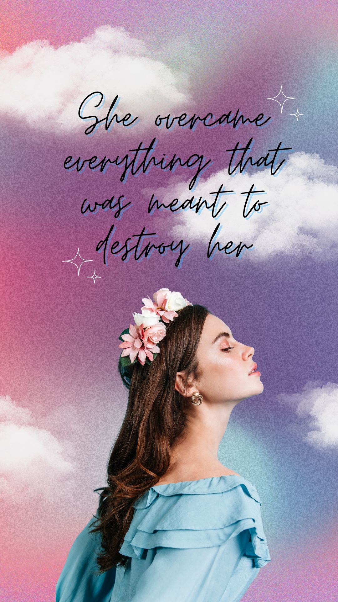
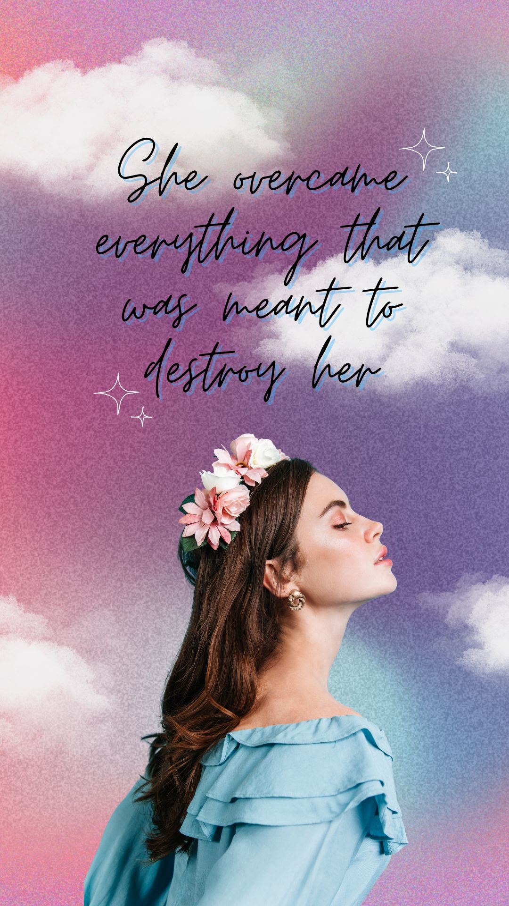
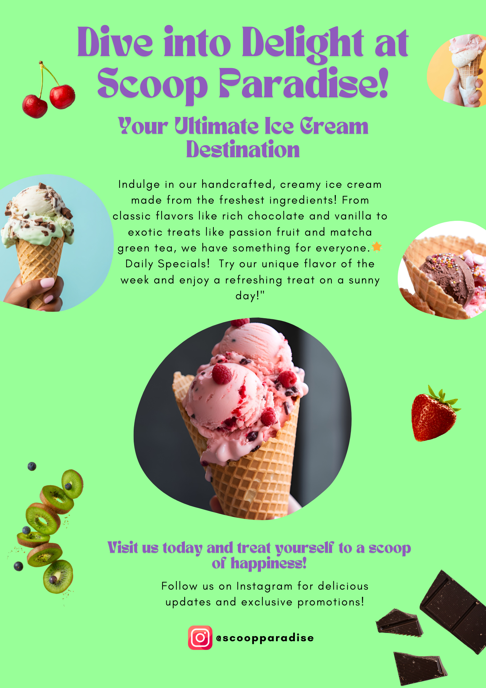
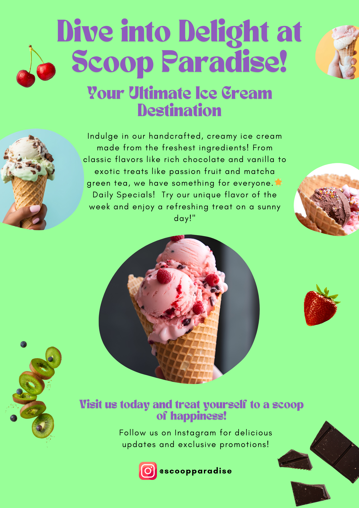

Olá, sou a Jéssica!

Sou uma aspirante a desenvolvedora Front-End Júnior com conhecimento básico em HTML, CSS e JavaScript. Tenho experiência prática na criação de sites simples, que desenvolvo para praticar o que aprendi, através de acertos e muitos erros, mas sempre me empenhando em estudar para criar projetos cada vez melhores. Atualmente, estou matriculada no "Coding the Future Bootcamp", oferecido pela Dio em parceria com o Grupo RiHappy, com o objetivo de aprimorar ainda mais minhas habilidades em tecnologias web. O desenvolvimento front-end me atrai e desperta uma curiosidade difícil de explicar. Essa jornada de aprendizado, apesar de desafiadora, tem sido fundamental para meu crescimento, tanto como profissional quanto como pessoa. Estou em busca de uma oportunidade no mercado de tecnologia onde eu possa desenvolver meu verdadeiro potencial, pois acredito que tenho muito a somar. Estou comprometida em aprender constantemente e sei que, quando desafiada, posso entregar resultados que agregam valor real à experiência do usuário.


 



 


 

Conecte-se comigo: